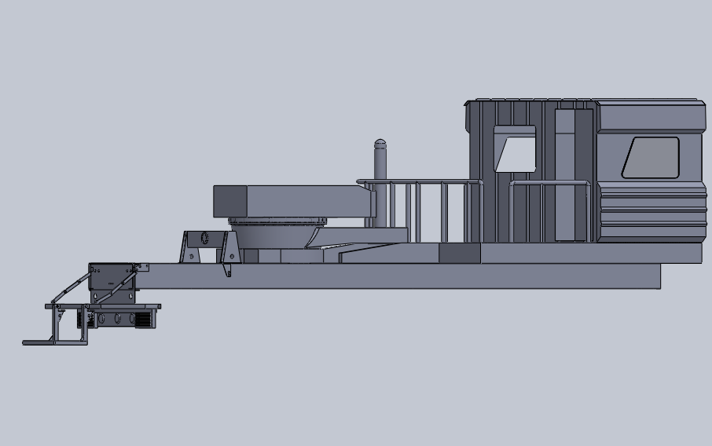

Type 84 Transport
Vehicle Launcher
I developed the cabin manufacturing design, rear access stairs and rear lighting arrangement for a Type 84 transport vehicle launcher project. My work included CAD assembly design and 2D engineering drawings documenting these contributions within the wider vehicle layout.


My design contribution
My responsibility covered the cabin's manufacturing design, the rear stairs and the rear lighting arrangement. I prepared the CAD representation and supporting 2D drawings for this scope.
The project highlights my work on vehicle cabin design, access components and drawing documentation with manufacturing and assembly requirements in mind.
Project context
The team worked with a vehicle sourced from China and incorporated an existing Type 84 launcher at the rear. My cabin design formed part of this broader vehicle integration project.
The isometric and side views present the cabin in the context of the overall CAD assembly.
06.1 / DESIGN DOCUMENTATION
2D Engineering Drawings
Drawing documentation
These selected 2D drawings complement the CAD assembly views above. They show the overall vehicle arrangement and the rear platform, stairs and lighting layout, including multiple drawing views and a parts list.
My design scope included the cabin, rear access stairs and rear lighting arrangement.
Confidentiality & selected work
Selected CAD views and 2D drawings are presented to illustrate my design contribution. Complete 3D models and restricted project details are withheld due to confidentiality.